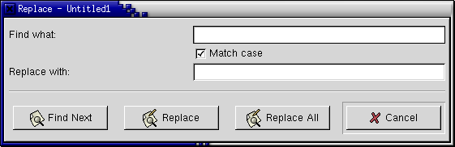

Replace Dialog

Find What:
Type the set of characters you want to replace in this box. This is the 'search string'.
Match case
If this option is selected, AbiWord will treat capital and lower case letters as different when deciding whether part of the document matches the search request. If it is not selected, they are treated as the same, so that 'IN' and 'In' would both match 'in'.
Replace with:
Type the characters you want to use as replacements in this box. You may put nothing in this box, in which case the replacement will simply delete the text you found. This is the 'replacement string'.
Find Next
This button will find the next occurrence of the search string. AbiWord starts searching from the insertion point, and goes back to the beginning of the document once you reach the end. It searches the whole document once.
Replace
This button replaces the currently selected instance of the search string with the replacement string, and moves to the next occurrence of the search string after the end of the replaced text. (This ensures that the process does not get stuck if the replacement text includes the text you are replacing.) If you click this button before clicking Find Next, it simply finds the first occurrence of the search string.
Replace All
This button searches the whole document and replaces all occurrences of the search string with the replacement string. Be careful using this feature. For example, if you wanted to replace all instances of 'flat' with 'apartment', this button would convert the sentence 'He spoke flatly.' to 'He spoke apartmently.'
Cancel
This closes the Replace dialog.